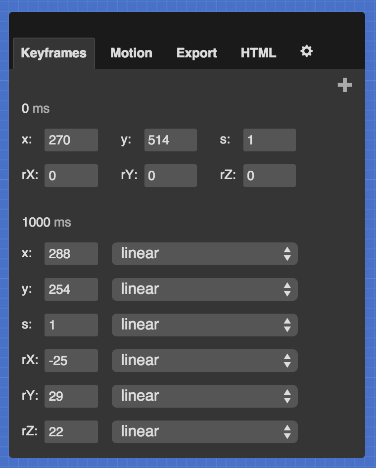
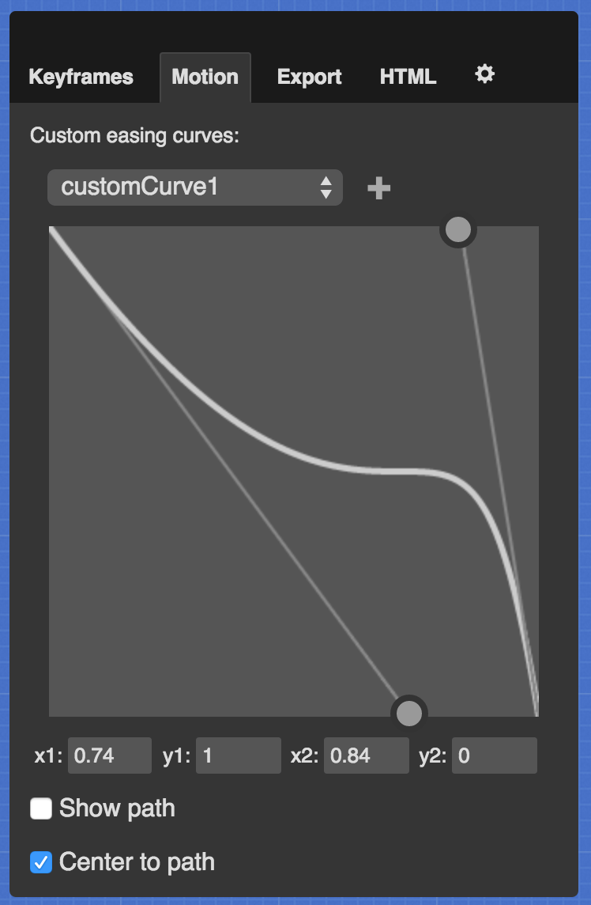

A fun CSS animation tool, powered by Rekapi
?

-
-
-
Customize the generated CSS.
-
-
Vendors:
-
Generated CSS:
-
-
Customize the HTML that you want to animate. The preview is updated as you type.
CSS animation made easy!
Stylie is a fun tool for easily creating CSS 3 animations. You can configure your animation graphically, tweak it, grab the generated CSS and go!
Watch this screencast for a quick tutorial.
The Stylie Workflow
When you first open the app, you will see a little ball moving from left to right. You probably don't want to animate an image of a ball, so click the "HTML" tab in the control panel on the right. This textarea contains the HTML that is being animated. You can put whatever you want in here, but let's stick some text in there for starters:
<h1>Hello there!</h1>
The preview updates automatically. Next, you'll want to change the beginning and ending positions of the animation. Just click and drag the crosshairs to your liking. When your cursor is not focused on a text input, you can hold the Shift key to make rotation Cubelets appear over the crosshairs. Click and drag the Cubelets to modify the the X and Y rotation axes, and drag the extended rotation arm to modify the Z axis rotation.

Keyframe editing
You can add, remove and edit keyframes. This is done in the "Keyframes" tab. When you first open Stylie, you are presented with the default keyframes. Keyframe 0 cannot be moved and has no easing properties associated with it, but all of the other keyframes do. To add a new keyframe, click the "Add a Keyframe" button in the upper right portion of the tab.
RX, RY and RZ refer to the three rotation axes. You can add as many keyframes as you'd like. You can also reorder keyframes by clicking their millisecond value and pressing the Enter key.

You can tweak individual keyframe properties by pressing the "up" and "down" arrow keys when focusing on a property's text input. You can change individual properties' easing formula by selecting it from the dropdown next to each text input. To remove a keyframe, click the "X" in the upper right corner of a keyframe.
Motion control
In addition to the standard easing formulae, you can define your own custom easing curves in the "Motion" tab. To do this, select or create a "customEasing" from the dropdown and drag the circular handles. You can also type in the coordinates for the control points. Once you have defined your custom curve, you can select it from any property's easing dropdown.
Playback control
You'll notice a playhead in the bottom left of the screen. This is fully interactive; you can can play, pause and stop the animation. You can also click and drag the playhead and zip to any part of the timeline.
Generating your CSS
Once you've configured the animation to your liking, it is time to generate the CSS to be used in your web page. Click on the "CSS" tab in the control panel to see the ready-to-use CSS. You can configure the generated CSS for your specific needs, such as the name of the CSS class on the DOM element to be animated, and which browser vendors you want to support. More complex animations will generate very verbose CSS, so be aware of that.
Key bindings
Stylie has a few keyboard-activated features:
| (When no inputs are focused) | |
|---|---|
| K | Add a new Keyframe |
| C | Toggle the Control Pane |
| T | Toggle the Timeline Scrubber |
| H | Toggle this Help screen |
| Space bar | Play/Pause the animation |
| Shift (hold) | Show keyframe rotation Cubelets |
This tool is open source
The code lives on Github. You are free to do what you please with the code - Stylie is distributed under an MIT license. If you would like to request a feature, please do so with the project's issue tracker.
How it's made
Stylie is built with some very useful open source libraries:
Author
Stylie is built and maintained by Jeremy Kahn. He's a nice guy and you can find him on Twitter and Github. Stylie's beautiful blue theme was designed by the talented Jon Victorino.
Hi! It looks like you are on a mobile device.
Stylie isn't built to work on a device like this, and you probably wouldn't want to use this kind of tool on a tiny screen anyways. Please try Stylie on a desktop or laptop. In the meantime, take a look at this video to get a feel for what you can do with Stylie on a larger screen.